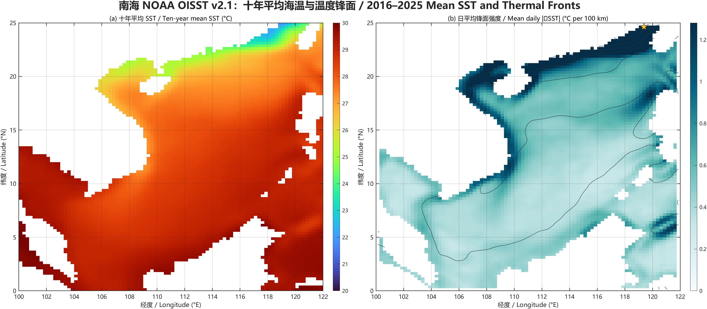

The answer in one minute
Ocean temperature and salinity are commonly measured with a CTD: a thermistor measures temperature, a conductivity cell provides salinity after conversion using temperature and pressure, and a pressure sensor gives depth. Shipboard CTD rosettes provide accurate, high-resolution profiles and water samples but are costly and sparse. Argo floats, moorings and gliders extend coverage and duration, with less control over sampling and sensor recovery. Satellites offer broad, repeated maps of sea-surface temperature and salinity but observe only a shallow surface layer and require calibration. Currents are measured directly with current meters, ADCPs, drifters, floats and coastal HF radar; their trade-offs include limited depth, range, duration, spatial coverage and sensitivity to waves, tides or platform motion.
For large-scale, slowly varying flow with weak friction, the horizontal pressure-gradient force approximately balances the Coriolis force. A sea-surface-height slope therefore implies a surface geostrophic current parallel to height contours. Horizontal density differences create pressure differences that change with depth, so they determine the vertical shear of the geostrophic current through thermal-wind balance. Altimetry can estimate surface geostrophic velocity from sea-surface-height gradients; hydrographic temperature-salinity profiles can estimate relative geostrophic velocity from dynamic-height differences. Reliable inference requires observations with adequate spatial resolution and near-synoptic timing, accurate positioning and corrections, distance from the equator, a small Rossby number, weak friction, and a reference level or independent velocity for hydrographic estimates.
What is measured, and how?
Every method samples a different combination of depth, area and time. A strong answer identifies both the physical principle and the sampling trade-off.
| Variable | Instrument or method | What it measures | Main advantages | Main limitations |
|---|---|---|---|---|
| Temperature | Ship CTD / thermistor | In situ temperature versus pressure; often lowered on a rosette. | High vertical resolution and accuracy; paired T–S observations; bottles allow laboratory checks. | Ship time is expensive; sections are spatially sparse and not instantaneous. |
| XBT | Temperature from a falling probe; depth is estimated from fall rate. | Fast and relatively inexpensive underway profiling. | No salinity; expendable; fall-rate and depth biases require correction. | |
| Argo, gliders, moorings | Repeated autonomous profiles or fixed time series. | Long duration, broad or sustained subsurface sampling; works in poor weather. | Sampling paths/depths are constrained; gaps, drift and delayed calibration can occur. | |
| Satellite radiometers | Infrared or microwave brightness related to skin/subskin SST. | Frequent, nearly global maps. | Surface only; infrared is blocked by cloud; retrievals need atmospheric correction and in situ validation. | |
| Salinity | CTD conductivity cell | Conductivity plus temperature and pressure, converted to Practical Salinity. | Accurate, co-located profiles suitable for density calculation. | Biofouling and sensor drift matter; conductivity is an indirect salinity measurement. |
| Niskin bottle + salinometer | Discrete water sample analyzed in the laboratory. | High-quality reference and calibration samples; other properties can be measured. | Few depths and stations; sample handling takes time. | |
| Argo / satellite L-band | Autonomous profiles or microwave sea-surface salinity. | Argo resolves the water column; satellites provide basin-scale surface maps. | Argo is irregular in space/time; satellite signals are noisy near land, rain, ice and cold water and represent only the surface. | |
| Currents | Current meter | Velocity at one depth using rotors, acoustics or electromagnetic sensing. | Long, high-frequency Eulerian time series. | Only one or a few points; mooring motion and biofouling can affect data. |
| ADCP | Doppler shift of sound scattered by particles, yielding velocity in depth bins. | Profiles several depths at once; can be shipboard, moored or lowered. | Range/resolution trade-off; needs scatterers and careful correction for platform motion, heading and sidelobes. | |
| Drifters and floats | Trajectory displacement over time: a Lagrangian velocity. | Follows water parcels over large distances. | Sparse and depth-specific; windage, Stokes drift and imperfect depth following can bias interpretation. | |
| HF radar | Radio backscatter used to map coastal surface velocity. | Repeated two-dimensional coastal maps in near real time. | Coastal range only; geometry, interference and low signal can create gaps. | |
| Satellite altimetry | Sea-surface height; geostrophic current is inferred from its horizontal slope. | Repeated, broad-scale coverage with consistent sampling. | Indirect; along-track sampling and mapping smooth small scales; tides, atmosphere, geoid and ageostrophic motions require treatment. |
Conductivity → salinity
Temperature → heat state
Depth → from pressure
Acoustic Doppler shift → a vertical profile of horizontal velocity.
Excellent horizontal coverage; limited direct information below the surface.
From pressure gradients to currents
f k × ug = −(1/ρ0) ∇hp
In geostrophic balance, the Coriolis acceleration and horizontal pressure-gradient force are equal and opposite. The current runs along pressure contours rather than directly from high pressure to low pressure.
ug = −g/f · ∂η/∂y
vg = g/f · ∂η/∂x
A tilted sea surface creates a horizontal pressure gradient through the entire water column. In the Northern Hemisphere, higher sea level lies to the right of the geostrophic flow; the direction reverses in the Southern Hemisphere.
∂ug/∂z = g/(fρ0) · ∂ρ/∂y
∂vg/∂z = −g/(fρ0) · ∂ρ/∂x
Because pressure is the weight of the water above, horizontal density contrasts make pressure gradients vary with depth. Sloping isopycnals therefore imply vertical shear, not an absolute velocity by themselves.
Two routes from observations to geostrophic velocity
Altimetric route: surface velocity
- Measure satellite-to-surface range and orbit.
- Correct for tides, atmosphere and instrumental effects.
- Form sea-surface height relative to the geoid, or combine sea-level anomaly with mean dynamic topography.
- Map the field, calculate horizontal gradients, and apply the surface equations above.
Output: an estimate of absolute surface geostrophic velocity when absolute dynamic topography is available.
Hydrographic route: relative velocity
- Measure temperature, salinity and pressure at neighboring stations.
- Apply quality control and convert to Absolute Salinity, Conservative Temperature and density using TEOS-10.
- Integrate specific-volume anomaly to obtain dynamic height.
- Use horizontal dynamic-height differences to calculate geostrophic shear or velocity relative to a chosen pressure.
Output: relative geostrophic velocity; an assumed level of no motion or an independent reference velocity is needed for an absolute current.
What the available data can—and cannot—show



OISST locates persistent thermal fronts. Argo supplies subsurface temperature, salinity, pressure and density. Together they improve physical interpretation.
The E: drive files inspected contain no collocated SSH or direct velocity field. Temperature alone cannot separate salinity compensation or ageostrophic flow.
Add mapped absolute dynamic topography for surface flow, or pair the hydrographic section with an ADCP/reference velocity for an absolute section.
Conditions for inferring geostrophic currents
Rotation dominates. The Rossby number Ro = U/(|f|L) should be much smaller than one.
Away from the equator. Because f approaches zero, ordinary geostrophic formulas become singular and equatorial dynamics must be used.
Weak friction. The estimate is most appropriate in the ocean interior, outside the surface Ekman layer, bottom boundary layer and strongly frictional coastal zones.
Slow evolution. Horizontal acceleration should be small relative to pressure-gradient and Coriolis terms; tides, inertial oscillations, fronts and wind-driven events may violate this.
Hydrostatic structure. Pressure should be well represented by the weight of the overlying water, as is typical for large-scale ocean flow.
Adequate sampling. Stations or satellite maps must resolve the horizontal gradient and be sufficiently simultaneous that temporal change is not mistaken for spatial structure.
Corrected observations. Altimetry needs orbit, geoid, tide and atmospheric corrections; hydrography needs calibrated T–S–p sensors, quality control and TEOS-10 calculations.
A velocity reference. Density sections yield shear or relative current. Use a credible reference level, ADCP, float displacement or another independent constraint for absolute velocity.
Integrated response
Ocean temperature is measured in situ by thermistors on CTDs, XBTs, Argo floats, gliders and moorings, and remotely by infrared or microwave satellite radiometers. In situ sensors resolve the vertical structure accurately but provide limited spatial or temporal coverage, whereas satellites repeatedly map large areas but observe only the skin or near-surface ocean and require atmospheric correction and calibration. Salinity is usually derived from conductivity, temperature and pressure measured by a CTD. Bottle samples analyzed with a salinometer provide high-quality checks, and Argo extends T–S profiling over the open ocean. Satellite L-band radiometry maps surface salinity globally, but its resolution and accuracy decline near coasts, rain, ice and cold water. Currents are measured directly by current meters, ADCPs, surface drifters, subsurface floats and coastal HF radar. These methods provide either time series, vertical profiles, trajectories or surface maps, but none samples all depths and scales; platform motion, acoustic range, windage and geographic coverage are common limitations.
For large-scale, slowly varying motion away from strong friction, the horizontal pressure-gradient force approximately balances the Coriolis force: fk × ug = −ρ0−1∇hp. At the sea surface, a height slope gives ug = −(g/f)∂η/∂y and vg = (g/f)∂η/∂x. Thus the current is parallel to sea-surface-height contours, with higher sea level on its right in the Northern Hemisphere. Horizontal temperature and salinity differences change density; under hydrostatic balance, these density contrasts make the horizontal pressure gradient vary with depth. Thermal-wind balance therefore relates horizontal density gradients to vertical geostrophic shear.
Satellite altimetry can infer surface geostrophic velocity from gradients of absolute dynamic topography. CTD or Argo sections can infer dynamic-height differences and geostrophic velocity relative to a reference pressure. The latter becomes absolute only when a level of no motion or an independent velocity measurement is supplied. Both approaches require accurate corrections, sufficient spatial resolution and near-synoptic sampling. They work best when the Rossby number is small, the flow is away from the equator and strong boundary friction, hydrostatic balance is appropriate, and tides, inertial motion, Ekman flow and other ageostrophic components have been filtered or treated separately.
As an observational example, six official Argo GDAC profiles across the South China Sea from 13–16 March 2017 were converted to TEOS-10 Absolute Salinity and Conservative Temperature. Dynamic-height differences relative to 700 dbar give 10 dbar section-normal relative velocities from −0.492 to +0.195 m s−1. This demonstrates how horizontal density structure constrains geostrophic shear, while also showing why hydrographic estimates require near-synoptic sampling and an independent velocity reference before they can be interpreted as absolute currents.
Self-check and scope
- Physics: the vector and component equations use a positive Coriolis parameter in the Northern Hemisphere; the stated direction follows their signs.
- Numerics: 0.20 m over 100 km at 30°N gives 0.269 m s−1; the calculation was independently evaluated in MATLAB.
- Density evidence: six actual Argo station samples at 100 dbar give 1023.522–1025.325 kg m−3, a range of 1.804 kg m−3.
- Relative-current verification: MATLAB independently reproduced every exported velocity from Δ(dynamic height)/(fΔs); the maximum difference was 5.55 × 10−16 m s−1.
- Interpretation: SST is treated as a tracer and partial density control, never as a complete substitute for T–S density, SSH or velocity.
- Inference: density data are described as providing shear/relative velocity unless a reference is supplied; altimetry requires absolute dynamic topography for absolute surface current.
References
Data provenance: OISST files were read from E:\研究生课题\data\OISST_ERA5_1996_2025\OISST. The six Figure 3 profiles were downloaded from the official Coriolis Argo GDAC mirror on 20 October 2026; file paths and SHA-256 hashes are recorded in the downloadable package. Values are rounded only for presentation.